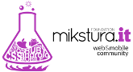
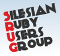
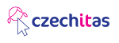
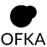

Hello world!
Rails Girls is coming to Cieszyn! During the free two-day workshop we'll dive into the magical world of Ruby on Rails.
Registration completed.
You learn designing, prototyping and coding with the help from our coaches.
You need your own laptop, curiosity and a sprinkle of imagination!
Want to help? We are looking for volunteers and Rails coaches. Email us.
| 10:30 - 12:30 |
Free Cieszyn TourNice walk around Cieszyn (meet our team and have fun). Start here. |
|---|---|
| 16:30 - 17:00 |
Registration |
| 17:00 - 18:00 |
Welcome & Environment InstallationWe'll install Ruby on Rails on your computer, so bring your laptop with you. |
| 18:00 - 19:00 |
Lightning TalksAlex Malaszkiewicz - "How the Internet Works?"Urszula Janus - "My way into IT" Michał Czyż - "Yes, you can be a software engineer!" |
| 19:00 - 20:00 |
Workshop |
| 20:00 - 24:00 |
Middleparty;] |
| 09:00 - 10:00 |
Breakfast |
|---|---|
| 10:00 - 13:00 |
Workshop |
| 13:00 - 14:00 |
Lunch |
| 14:00 - 15:00 |
Lightning TalksUrszula Mitas - "Women in technology - Behind the scenes"Natalia Stanko - "Power of events" |
| 15:00 - 18:00 |
WorkshopExtend your application |
| 18:00 |
Final Lightning Talks |
How much does the workshop cost? Nothing, it's free! You just need to be excited!
Who is this aimed for? Women of any age with basic knowledge of working with a computer. The speeches and group work mostly are given in Polish, but there may be a group of English-speaking. Please bring your laptop.
Can men attend? Yes, but girls are given a priority.
I know how to program - How can I help? We're also looking for people to be coaches. We'll have a two-three hour workshop before the event to walk you through the curriculum. Tweet us
Woman on Rails is a blog about technologies (ie Ruby, Rails, JavaScript, CoffeeScript), emotions and IT events.
Women in Technology is a community of women who share one common feature - Technology.
 Mikstura.IT is a foundation which grew out of a web and mobile community aiming to provide an interactive forum for programmers, designers and entrepreneurs, NGO innovators and all people.
 SRUG (Silesian Ruby Users Group) is friendly and regular meetings about Ruby language and more. The purpose is to exchange knowledge and experiences of developers.
 Czechitas is a community for women who like to learn IT. Czechitas are organizing workshops on different levels of knowledge.
 OFKA is a cozy boutique rooms, a summer cafe, bike rental and tour Event.
Application opening: 16 September, 2016
Application deadline: 2 October, 2016
Acceptances informed after: 8 October, 2016
Location: Classicist palace of the Habsburgs, Zamkowa 3, Cieszyn, Poland
Rails Girls Silesia is co-organized with our awesome partners.
Want to help? We're looking for partners & sponsors for the non-profit event! Email us!
To bring out the beauty of gemstones, use an appropriate cut.
Fractal Soft is a team ripped with passion. They love simple solutions, travels and good programming practices. They use Ruby on Rails to fulfill the dreams of web applications. You can meet them at various IT events (Rails Girls, CoderDojo, SRUG). Additionally, they have an office in Cieszyn. Visit us!
 Code, test, and deploy with GitLab your open source git management solution. GitLab is a next-level platform for teams who want the highest levels of security, flexibility, and collaboration on their projects.
Code, test, and deploy with GitLab your open source git management solution. GitLab is a next-level platform for teams who want the highest levels of security, flexibility, and collaboration on their projects.
 GitHub is the best place to share code with friends, co-workers, classmates, and complete strangers. Over 14 million people use GitHub to build amazing things together.
GitHub is the best place to share code with friends, co-workers, classmates, and complete strangers. Over 14 million people use GitHub to build amazing things together.
 Cowbell Labs is a small band of enthusiasts who create web applications and mobile, utilizing the latest and best tools - including Ruby on Rails.
Cowbell Labs is a small band of enthusiasts who create web applications and mobile, utilizing the latest and best tools - including Ruby on Rails.
 Selleo have worked with Ruby on Rails since the company foundation back in 2005. Ruby on Rails have always been the core web technology with which the Selleo team have implemented their projects.
Selleo have worked with Ruby on Rails since the company foundation back in 2005. Ruby on Rails have always been the core web technology with which the Selleo team have implemented their projects.
Rebased is a team Ruby on Rails and Javascript developers who have supported Rails Girls since their first event in Warsaw back in 2012. They dare to call themselves bullshit-free programmers - proven by years of experience and impressive open source record.
Hello, we're Prograils, Web & Mobile development team from Poznan. Our Agile Software House creates world class web & mobile apps. Plus, we love Ruby on Rails just like Rails Girls do! Have you heard we're hiring? :-)
 Put the programming books away and learn by doing with Code School. Code School offers a variety of JavaScript, HTML/CSS, Ruby and iOS courses to help you expand your skills and learn new technologies.
Put the programming books away and learn by doing with Code School. Code School offers a variety of JavaScript, HTML/CSS, Ruby and iOS courses to help you expand your skills and learn new technologies.
Pragmatic Bookshelf create timely, practical books, audio books and videos on classic and cutting-edge topics to help you learn and practice your craft.
 Soroptimist International Cieszyn is a global organization for women with high professional and social position. Their mission is to take action to improve the lives of women and girls.
Soroptimist International Cieszyn is a global organization for women with high professional and social position. Their mission is to take action to improve the lives of women and girls.

 Alex Malaszkiewicz,
Alex Malaszkiewicz, Ula Hołodniak,
Ula Hołodniak, Grzegorz Lisowski,
Grzegorz Lisowski, Jiří Gracík,
Jiří Gracík, Magda Malinowska,
Magda Malinowska,